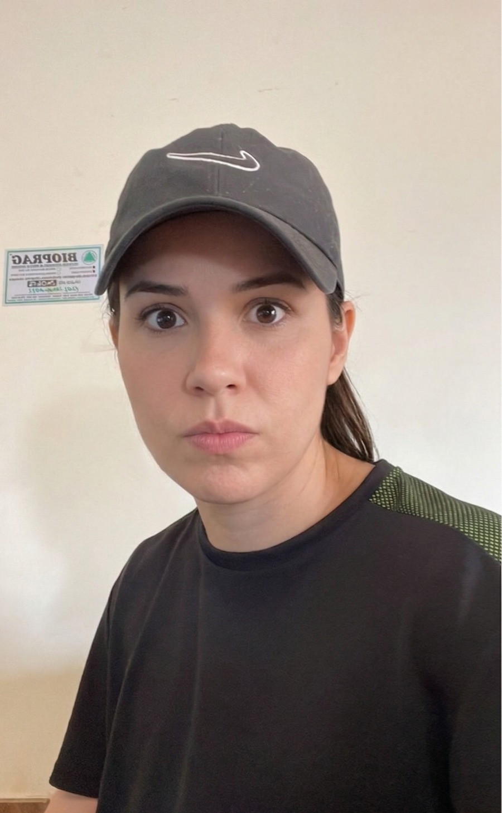

Pronto para compartilhar
Clique em "AO VIVO" ao lado do nome de um participante para assistir a tela dele. Você pode assistir vários ao mesmo tempo, lado a lado.

Clique em "AO VIVO" ao lado do nome de um participante para assistir a tela dele. Você pode assistir vários ao mesmo tempo, lado a lado.
Mensagem.